The DMAT GUI
In order to reach a wide public, and because not everyone is accustomed to working with a command interface like MATLAB's, we have provided a graphical user interface with the Diffusion Model Analysis Toolbox. However, we would like to stress from the start that the command interface has more options and more flexibility than the GUI. Some things you just won't be able to do with just the GUI (but all the basics, you will).
Contents
When MATLAB is loaded, simply type: dmatgui. A window will pop up that should look very much like this:

We've tried to make this GUI work as intuitively as possible.
GUI structure
In the GUI, there are five main panels. On the right side, there is the Data set panel, which contains a view of the data once you've loaded them, and a Browse button and filename field. This panel also contains buttons that let you switch to the Output Viewer (more about this later) and allow you to save or load a DMAT session (so you can stop working and continue later).
On the left side, there are four panels. The Change settings panel gives access to model properties that you can edit in order to construct a diffusion model for your experiment.
The Current settings panel displays some information about the model that is currently loaded (i.e., the one you're working on).
The Queue actions panel gives access to queues of models. In general, you will want to evaluate not one model, but an entire series of models. Such series of models are called 'queues'. With the buttons in this panel, you can save, load, edit and build queues. You can also submit them for evaluation with the Run button.
Last is the Tools panel, where you can access some programs that do not directly relate to Diffusion Model Analysis.
Loading data
Before you can do anything in the DMAT GUI, you will need to load a data set. There are two ways of loading data into the GUI. The easier way is to click the Browse button and locate the file on your hard drive. Another way is to simply type the filename and location into the Datafile field and click anywhere in the GUI. If there is something wrong with the datafile, the data set will be rejected and an error message will tell you why.
After loading, the data should be shown in the table, as seen here:
Notice that we've loaded a very large data set now, and that the entire set is not displayed (to conserve Java memory), but DMAT informs (at the bottom left) that it has in fact been loaded.
Descriptive statistics
As soon as a data set has been loaded, DMAT can calculate some simple descriptive statistics for you. Simply click Switch to output viewer, and the following window will appear:
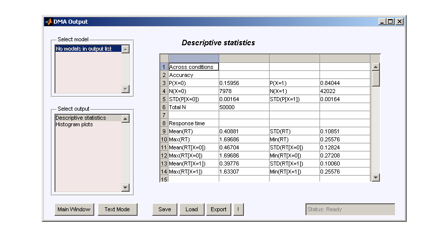This list contains some simple statistics, such as accuracy ratings, average response times, and break-downs by condition and reply. Selecting Histogram plots from the list on the left will show the distribution of response time for each response and each condition (use the little listbox at the bottom to switch between conditions):

The buttons in this window have the following functions. Main Window closes the output viewer and returns to the main window. Text Mode hides the GUI and gives the user command-prompt control. Save can be used to save the output (if there is anything to save). Load can be used to load a previously saved DMAT output. Export responds differently according to what you're viewing. If the output viewer is currently showing a figure, it will cause a new window to pop up with the image (or several windows if there was more than one image) in them, so you can edit them with MATLAB Plot Tools if you like. If the output viewer is showing a table, Export will write that table and all other available ones to an Excel file (on Windows; note that this can take a while). Finally, the rightmost button, labeled simply ! is a panic button, which resets the Output Viewer to its virgin state. It's there just in case something goes wrong and the Output Viewer doesn't respond properly.
Defining models #1
With the DMAT GUI, there are two basic ways of defining a model. One straightforward way is to browse through the Change settings panel in the main window and construct exactly the model you like. You can select an outlier treatment strategy (the default is none), define design matrices for any or all parameters (the default is no effects across conditions for all parameters), fix certain parameters (default is none), or set specific biases (i.e., starting point z0 as a certain fraction of boundary separation a (default is none).
To change design matrices, for example for drift rate v, select v in the menu. This screen will appear:
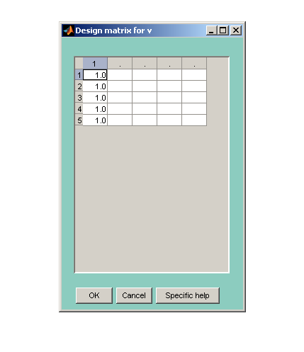The Specific Help button here only tells you one thing: when inputting a table or matrix in MATLAB, you need to confirm each entry by selecting another field:
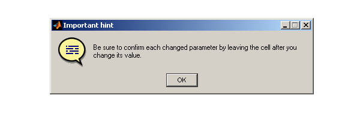This hint applies to all other tables as well.
Now, input the design matrix of your liking, or remove every entry to remove any design (i.e., allow each drift rate to vary freely across conditions), like so:
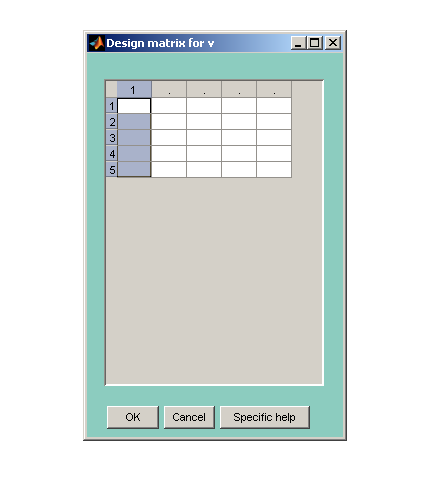And confirm by clicking OK. Notice that, in the main window, the Current settings panel no longer shows that a design on v is implemented:
To change specific biases, click the button labeled Set B (where B refers to the fraction that links z0 to a, so that a = z0 * B). This window appears:
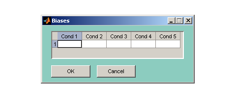Often, B will be approximately equal to .5. We could eliminate a parameter from the model by applying this restriction to all conditions, like so:
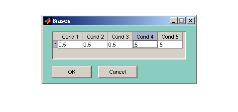Again, confirm with OK to store these restrictions.
Important: DMAT employs a strict hierarchy concerning the application of restrictions. The hierarchy is (1) design matrices, (2) fixed parameters, (3) specific biases. In practice, this means that if you have entered a design matrix for a specific parameter and fixed some of these parameters to a certain value, the fixes will be ignored and only the design matrix will be used. Similarly, in our example, we have input specific biases (namely z0 = .5 * a), but there is still a default design matrix present, and if DMAT runs this model, that design matrix will override the specific biases. Thus, in order to apply the spcific biases, you will need to select z0 from the design matrices list and remove every entry there, just as shown above for drift rate. Then and only then will the specific biases have any effect. If you've removed the design on z0, the Current settings panel should look like this:
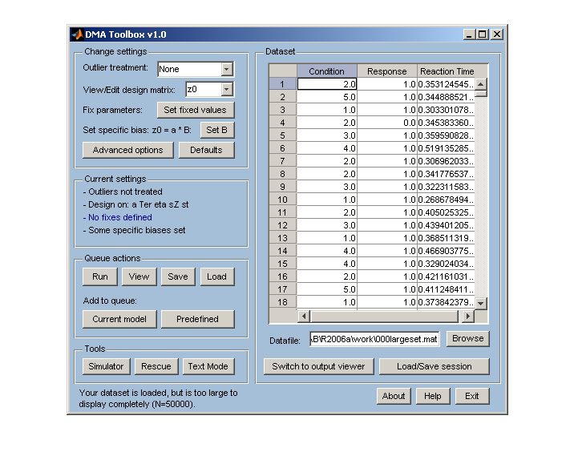Advanced settings are available with the Advanced button. Clicking that will cause this window to appear:
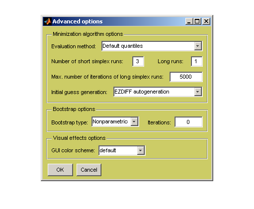Here, you can input bootstrap requests, or change the way the objective function is calculated or minimized. You can also make the DMAT GUI prettier.
When you've finished defining a model, you can add it to the Model Queue by clicking the Current model button under Queue actions. The GUI will ask you to name the model:

... and will then add the model to its queue of models. You can view (and edit) the queue with the View button:

Defining models #2
Defining models like this can be cumborsome. A short-cut exists, however, behind the Predefined button in the Queue actions panel. Clicking this button will bring up a list of elementary models:
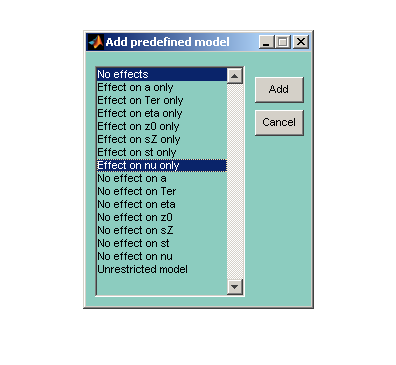For this data set, we may choose to load two standard models: the No effects model and the Effect on nu only model. The first model is of course also the default, but the second allows for free estimation of different drift rates. In fact, all models provided in this list are equipped with all the standard settings from multiestv4, save for different design matrices. Selecting both and clicking Add will cause DMAT to add them to the queue directly. Click View again to see:

In general, it is a good idea to allow DMAT to fit simpler models first, and more complex ones after that. Using the + and - buttons, you can change the order of models in the queue:
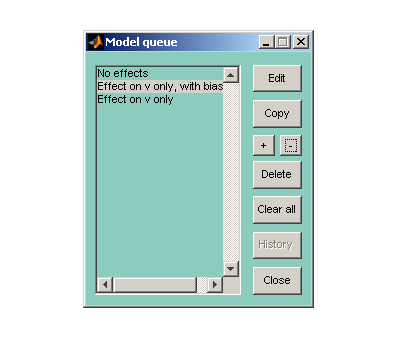You can also delete, copy or edit models in this queue. Note: when you click Edit, the model you selected will be removed from the queue for editing. If you don't put it back in place it (by clicking Current model) afterwards, it will not be included in the queue.
Running queues
'Running' a queue means fitting each of the models in it, one by one. When you've loaded your data and defined all the models you like, click Run to start estimating parameters. The output viewer will pop up immediately. After some time (patience may be needed), the output viewer will start to show results of model fits that have been completed. When the queue is finished, the list on the upper left will contain all the models in the queue, and more output options will have appeared in the menu below that:
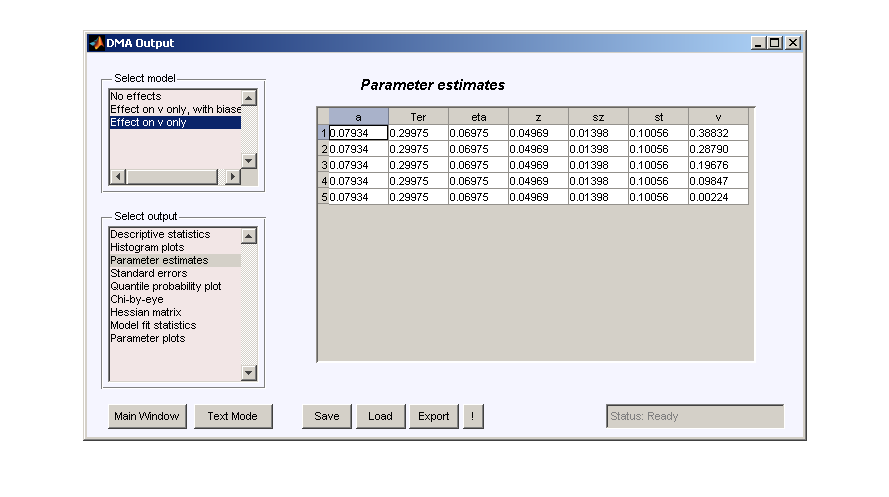While DMAT is performing parameter estimation in the background (progress is shown in the MATLAB Command Window), you can use the output viewer to inspect the descriptive statistics it has compiled. When each model is finished, the output viewer will be updated with more output, and you can start viewing this as well. However, we would generally recommend not bothering your computer at all while DMAT is running.
The viewer gives several types of output. If you're interested in recovery of the model (i.e., how closely the model approximates the data, the Chi-by-eye output should be interesting. It shows the empirical cumulative RT distributions for X=0 and X=1 responses in a full blue line. Then, the theoretical reproductions are overlaid in green and red dashed lines. Ideally, the lines overlap perfectly, as in the example (which had, for this very reason, very many data points):

For an example of poorly fitting CDFs, switch to the output of the first model:

Another popular visual representation is the quantile probability plot. A good fit is indicated by full lines (the model) connecting the crosses (data), like this:
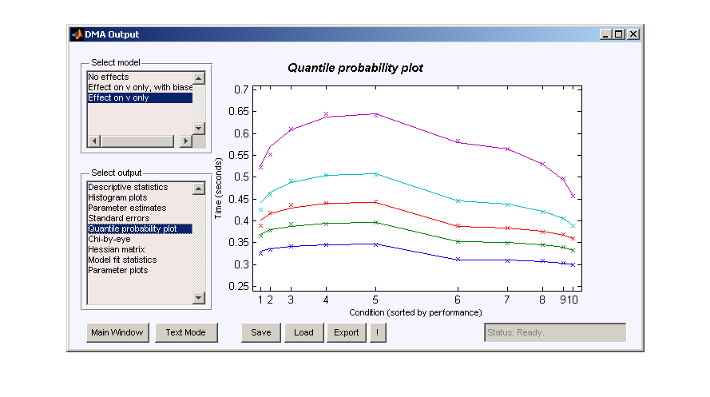Poor fit would be indicated by large misses of these lines. Note that rendering a QPP is a computationally heavy task, so it may take a few moments to appear (and perhaps more than a few moments if there are many conditions).
Of more interest if you are comparing conditions are the standard errors of the parameter point estimations:
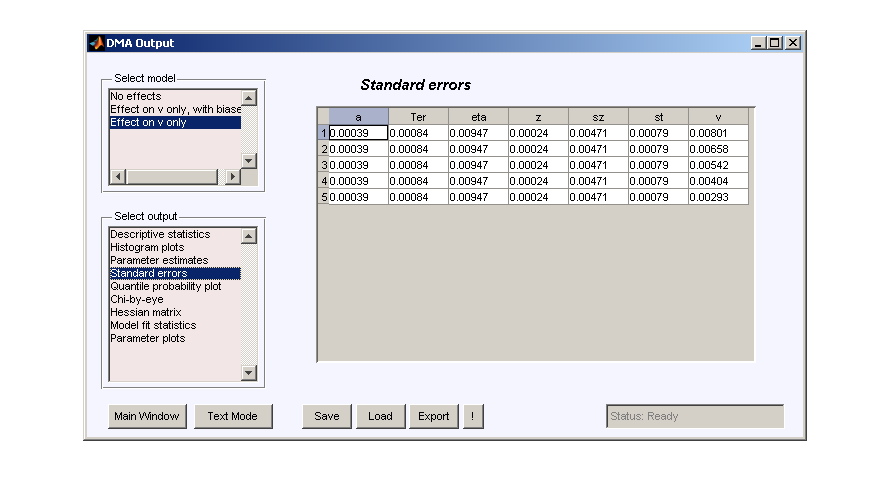It should be mentioned, however, that this output can also tell something about model fit. In the case of poor model fit (and in particular if the model is misspecified, the fitting algorithm did not converge, there are too few data points, or the data is too noisy), some of these standard errors might be imaginary numbers, represented in a+bi format, like 0.0000+0.0345i. If one of the standard errors in this table has an imaginary component, each element will be displayed in a+bi format (so standard errors that are in fact strictly real might be displayed as 0.0049+0.0000i).
Further, for comparing parameters across conditions, you can choose to plot the point estimates of each parameter across conditions. In the same plot, error bars of a single standard error will be shown (unless at least one of the standard errors is imaginary, in which case red circles will be displayed).
Saving and loading
If you have to interrupt your work, or would like to continue what you're doing at a later time, you can save DMAT sessions, output files, or model queues. An entire DMAT session can be saved and loaded from the button on the right side of the main window. Sessions are saved in a MATLAB file, but their extension is .dms, so it's easier to keep track of them. If you load a previous session, your current session will be lost.
DMAT queues can be saved or loaded with the Save and Load buttons in the Queue actions panel. Notice that, just like with sessions, DMAT queues can be saved in a MATLAB file with its own extension (.dmq). However, it is also possible to save queues as MATLAB m-files. This will produce a script that you can execute later, and which will perform the model evaluations for the models and data that you've defined without needing to load the graphical user interface. DMAT can also read and interpret those m-file scripts (if they are unchanged in structure), so you can load a queue from an m-file. If you load a queue, your current queue will be lost.
Finally, DMAT output can be saved with the Save button on the Output viewer, or loaded with the Load button. If you do this, just like when you load a session, your previous session will be overwritten and lost. Notice that you can only load output from the output viewer, and that you have to load a (any) data set before you can access that window.
Crashes
In the case of a crash (of DMAT, MATLAB, or your operating system), DMAT makes emergency back-ups. In fact, even while it is running, back-ups are constantly made and updated. In the event of a crash, you can access these back-ups and convert them to normal save files (as explained above) with the Rescue Tool, which you can call with the Rescue button in the main window:

Simulating
Lastly, the DMAT GUI also contains a simulation tool, which you activate with the Simulator button. This window will appear:

Here, you can input diffusion model parameters for as many conditions as you like, and specify how many data points there should be in each condition. Clicking Simulate and save will cause a browser window to pop up where you can select a file name and location for the data file. Simulating data is relatively efficient, but for very large data sets (more than 100,000 data points), it may take a while. It is not possible to simulate contaminated data sets with this tool.
Author of this file
Joachim Vandekerckhove (joachim.vandekerckhove@psy.kuleuven.be) Part of the DMA Toolbox. Please read the End User License Agreement, contained in 'dmateula.txt' or by invoking the DMATLICENSE command. See also http://ppw.kuleuven.be/okp/dmatoolbox.
Published with MATLAB® 7.2, M2HTML, and the DMA Toolbox